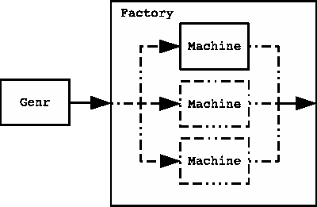

For modeling systems with a variable structure, Adevs provides a simple but effective mechanism to coordinate changes in structure and changes in state. This mechanism is based on the Dynamic DEVS modeling formalism described in A.M. Uhrmacher's paper ``Dynamic structures in modeling and simulation: a reflective approach", ACM Transactions on Modeling and Computer Simulation (TOMACS), Volume 11, Issue 2, pgs. 202-232, April 2001.
bool model_transition()and its default implementation simply returns false.
At the end of every simulation cycle (that is, after computing the models' new states but prior to the garbage collection step) the simulator invokes the model_transition method of every Atomic model that changed state in that cycle. When the model_transition method is invoked, the Atomic model can do anything except alter the set of components of a Network model.
If a model's model_transition method returns true, then the simulator calls the model_transition method of that model's parent. The parent is, of course, a Network model, and its model_transition method may add, remove, and rearrange the network's components. But it must not delete any components! The simulator will automatically delete components that are removed from the model when the structure change calculations are finished.
As before, if the Network's model_transition method returns true then the simulator invokes the model_transition method of its parent. Note, however, that the model_transition method of any model is invoked at most once in each simulation cycle. This invocation, if it occurs, takes place after every component of the network qualifying for the evaluation of its model_transition method has computed its change of structure.
After invoking every eligible model's model_transition method, the simulator performs a somewhat complicated cleanup process. During this process the simulator constructs two sets. The first set contains 1) the components that belonged to all of the Network models whose model_transition method was invoked and 2) all of the components of every model in this set (i.e., this set is constructed recursively: if any model is in the set, so are its component models). The second set is defined in the same way, but it is computed using sets of components as they are after the model_transition methods have been invoked.
The simulator deletes every model that has actually been removed. These are the models in the first set but not in the second. The simulator initializes every model that is genuinely new by computing its next event time (i.e., its creation time plus its time advance) and putting it into the event schedule. These are the models in the second second set but not in the first. The simulator leaves all other models alone.
The procedure for calculating a change of structure can be summarized as follows:
The procedure for calculating a change of structure is illustrated in Fig. 6.1. The black models' model_transition methods returned true. The set of components examined before and after the structure change are listed above the before (left) and after (right) trees. Notice that these models are in the sub-tree below the model , which is the top-most model in that sub-tree that returned false from its model_transition method. Also note that while the leaves of the tree may have had their model transition method invoked, none returns true and so their parents' model transition methods are not invoked nor are their sets of components considered when determining what models have been added and removed from the model. The set of deleted components is . The set of new components is .
The model_transition method can break the strict hierarchy and modularity that is usually observed when building Network models. Any Network model can, in principle, modify the set of components of any other model, regardless of proximity or hierarchy. The potential for anarchy is great, and so the design of a variable structure model should be considered carefully. There are two approaches to such a design that are simple and, in many cases, entirely adequate.
The first approach is to allow only Network models to effect structure changes and to restrict those changes to the Network's immediate sub-components. With this approach, an Atomic model initiates a structure change by posting a structure change request for its parent. The Atomic model's model_transition method returns true causing its parent's model_transition method to be invoked. The parent Network model then retrieves and acts on the requests posted by its components. The Network repeats this process if it wants to effect structure changes involving models other than its immediate children; i.e., it posts a request for its parent and returns true from its model_transition method.
The second approach allows arbitrary changes in structure by forcing the model at the top of the hierarchy to invoke its model_transition method. This causes the simulator to consider every model in the aftermath of a structure change. As in the first approach, an Atomic model that wants to effect a change of structure uses its model_transition method to post a request for its parent. This request is percolated up the model hierarchy by the Network models whose model_transition methods always return true.
The first approach trades flexibility for execution time. The second approach trades execution time for flexibility. With the first approach, structure changes that involve a small number of components require a small amount of work by the simulator. The scope of change must, however, be carefully restricted. With the second approach, every structure change requires the simulator to include every part of the model in its calculations, regardless of the actual extent of the change in structure. In this case, however, the scope of a structure change may be unlimited.
We will use a variable structure model to answer these questions. This model has three components: a generator that creates orders for gizmos, a model of a machine, and a model of the factory that contains the machines and that activates and deactivates machines as required to satisfy demand. The model of the factory is illustrated in Fig. 6.2.
|  |
The generator creates new orders for the factory. Each order is identified with an integer label, and the generator produces orders at the rate anticipated by the factory engineers. Demand at the factory is expected to be steady with a new order arriving every 1/2 to 2 days. This expected demand is modeled with a random variable that is uniformly distributed in [0.5,2]. Here is the code for the generator:
#include "adevs.h"
// The Genr models factory demand. It creates new orders every 0.5 to 2 days.
class Genr: public adevs::Atomic<int>
{
public:
/**
* The generator requires a seed for the random number that determines
* the time between new orders.
*/
Genr(unsigned long seed):
adevs::Atomic<int>(),next(1),u(seed){ set_time_to_order(); }
// Internal transition updates the order counter and
// determines the next arrival time
void delta_int() { next++; set_time_to_order(); }
// Output function produces the next order
void output_func(adevs::Bag<int>& yb) { yb.insert(next); }
// Time advance returns the time until the next order
double ta() { return time_to_order; }
// Model is input free, so these methods are empty
void delta_ext(double,const adevs::Bag<int>&){}
void delta_conf(const adevs::Bag<int>&){}
// No explicit memory management is needed
void gc_output(adevs::Bag<int>&){}
private:
// Next order ID
int next;
// Time until that order arrives
double time_to_order;
// Random variable for producing order arrival times
adevs::rv u;
// Method to set the order time
void set_time_to_order() { time_to_order = u.uniform(0.5,2.0); }
};
The model of a machine is similar to the Clerk in section 3. A machine requires 3 days to make a gizmo, and orders for gizmos are processed first come, first serve. The Machine's model_transition method is inherited from its Atomic base class. I'll discuss the role of the model_transition method after introducing the Factory class. Here is the code for the Machine.
#include "adevs.h"
#include <cassert>
#include <deque>
/**
* This class models a machine as a fifo queue and server with fixed service time.
* The model_transition method is used, in conjunction with the Factory model_transition
* method, to add and remove machines as needed to satisfy a 6 day turnaround time
* for orders.
*/
class Machine: public adevs::Atomic<int>
{
public:
Machine():adevs::Atomic<int>(),tleft(DBL_MAX){}
void delta_int()
{
q.pop_front(); // Remove the completed job
if (q.empty()) tleft = DBL_MAX; // Is the Machine idle?
else tleft = 3.0; // Or is it still working?
}
void delta_ext(double e, const adevs::Bag<int>& xb)
{
// Update the remaining time if the machine is working
if (!q.empty()) tleft -= e;
// Put new orders into the queue
adevs::Bag<int>::const_iterator iter = xb.begin();
for (; iter != xb.end(); iter++)
{
// If the machine is idle then set the service time
if (q.empty()) tleft = 3.0;
// Put the order into the back of the queue
q.push_back(*iter);
}
}
void delta_conf(const adevs::Bag<int>& xb)
{
delta_int();
delta_ext(0.0,xb);
}
void output_func(adevs::Bag<int>& yb)
{
// Expel the completed order
yb.insert(q.front());
}
double ta()
{
return tleft;
}
// The model transition function returns true if another order can not
// be accommodated or if the machine is idle.
bool model_transition()
{
// Check that the queue size is legal
assert(q.size() <= 2);
// Return the idle or full status
return (q.size() == 0 || q.size() == 2);
}
// Get the number of orders in the queue
unsigned int getQueueSize() const { return q.size(); }
// No garbage collection
void gc_output(adevs::Bag<int>&){}
private:
// Queue for orders that are waiting to be processed
std::deque<int> q;
// Time remaining on the order at the front of the queue
double tleft;
};
The number of Machine models contained in the Factory model at any time is determined by the current demand for gizmos. The real factory, of course, will have a fixed number of machines on the factory floor, but the planners do not know how many machines are needed. A variable structure model that creates and destroys machines as needed is a good way to accommodate this uncertainty.
The Custom Widget and Gizmo Company has built its reputation on a guaranteed time of service, from order to delivery, of 15 days. This leaves only 6 days for the manufacturing process, the remaining time being consumed by order processing, delivery, etc.
A single machine can meet this schedule if it has at most one order waiting in its queue at any time. However, it costs a dollar a day to operate a machine and so the factory engineers want to minimize the number of machines working at any time. To accomplish this goal, the factory's operating policy has two rules:
The Factory model implements this policy in the following way. If a Machine becomes idle or if its queue is full (i.e., the machine is working on one order and has another order waiting in its queue), then that machine's model_transition method returns true. This causes the Factory's model_transition method to be invoked. The Factory first looks for and removes machines that have no work. Then it examines each remaining machine to determine if the required one unit of additional capacity is available. If the required unit of additional capacity is not available then the Factory creates a new machine.
This is an example of the first approach to building a variable structure model. With this design, the simulator's structure calculations are done only when the Factory's model_transition method is invoked, and these calculations are therefore limited to instants when Machine models are likely to be created or destroyed. Our design, however, is complicated somewhat by the need for Machine and Factory objects to communicate; i.e., the Machine models must watch their own status and inform the Factory when there is a potential shortage of capacity.
If we had used the second approached to build our variable structure model, then the Machines' model_transition method could have simply returned true: no need for a status check. The Factory would iterate through its list of Machines, adding and deleting Machines as needed. This is more computationally expensive: the simulator looks for changes in the Factory's set of components at each simulation cycle. However, the design of the model is simpler, albeit only marginally so in this instance.
The Factory is a Network model and must implement all of the Network's virtual methods: route, getComponents, and model_transition. The route method is responsible for assigning orders to machines. When an order arrives, it is sent to the machine that will most quickly satisfy the order. The getComponents method puts the current set of machines into the Set c of components. The model_transition method examines the status of each machine, deleting idle machines and adding new machines if they are needed to maintain reserve capacity. The Factory implementation is shown below.
#include "adevs.h"
#include "Machine.h"
#include <list>
class Factory: public adevs::Network<int> {
public:
Factory();
void getComponents(adevs::Set<adevs::Devs<int>*>& c);
void route(const int& order, adevs::Devs<int>* src,
adevs::Bag<adevs::Event<int> >& r);
bool model_transition();
~Factory();
// Get the number of machines
int getMachineCount();
private:
// This is the machine set
std::list<Machine*> machines;
// Method for adding a machine to the factory
void add_machine();
// Compute time needed for a machine to finish a new job
double compute_service_time(Machine* m);
};
#include "Factory.h"
using namespace adevs;
using namespace std;
Factory::Factory():
Network<int>() { // call the parent constructor
add_machine(); // Add the first machine the the machine set
}
void Factory::getComponents(Set<Devs<int>*>& c) {
// Copy the machine set to c
list<Machine*>::iterator iter;
for (iter = machines.begin(); iter != machines.end(); iter++)
c.insert(*iter);
}
void Factory::route(const int& order, Devs<int>* src, Bag<Event<int> >& r) {
// If this is a machine output, then it leaves the factory
if (src != this) {
r.insert(Event<int>(this,order));
return;
}
// Otherwise, use the machine that can most quickly fill the order
Machine* pick = NULL; // No machine
double pick_time = DBL_MAX; // Infinite time for service
list<Machine*>::iterator iter;
for (iter = machines.begin(); iter != machines.end(); iter++) {
// If the machine is available
if ((*iter)->getQueueSize() <= 1) {
double candidate_time = compute_service_time(*iter);
// If the candidate service time is smaller than the pick service time
if (candidate_time < pick_time) {
pick_time = candidate_time;
pick = *iter;
}
}
}
// Make sure we found a machine with a small enough service time
assert(pick != NULL && pick_time <= 6.0);
// Use this machine to process the order
r.insert(Event<int>(pick,order));
}
bool Factory::model_transition() {
// Remove idle machines
list<Machine*>::iterator iter = machines.begin();
while (iter != machines.end()) {
if ((*iter)->getQueueSize() == 0) iter = machines.erase(iter);
else iter++;
}
// Add the new machine if we need it
int spare_cap = 0;
for (iter = machines.begin(); iter != machines.end(); iter++)
spare_cap += 2 - (*iter)->getQueueSize();
if (spare_cap == 0) add_machine();
return false;
}
void Factory::add_machine() {
machines.push_back(new Machine());
machines.back()->setParent(this);
}
double Factory::compute_service_time(Machine* m) {
// If the machine is already working
if (m->ta() < DBL_MAX) return 3.0+(m->getQueueSize()-1)*3.0+m->ta();
// Otherwise it is idle
else return 3.0;
}
int Factory::getMachineCount() {
return machines.size();
}
Factory::~Factory() {
// Delete all of the machines
list<Machine*>::iterator iter;
for (iter = machines.begin(); iter != machines.end(); iter++)
delete *iter;
}
To illustrate how the model_transition method works, let us manually simulate the processing of a few orders. The first order arrives at day zero, the second order at day one, and the third order at day three. At the start, on day zero, there is one idle machine. When the first order arrives, the Factory's route method is invoked, and it sends the order to the idle machine. The Machine's delta_ext method is invoked, and the machine begins processing the order. Next the Machine's model_transition method is invoked. It discovers that the machine is working and has space in its queue, and so the model_transition method returns false.
When the second order arrives on day one, the Factory's route method is called again. There is only one Machine and it has space in its queue so the order is sent to that Machine. The Machine's delta_ext method is invoked and it queues the order. The Machine's model_transition method is invoked next, and because the queue is full the method returns true. This causes the the Factory's model_transition method to be invoked. It examines the Machine's status, sees that it is overloaded, and creates a new Machine.
At this time, the working Machine needs two more days to finish the first order, and it will not complete its second order until a total of five days have elapsed.
There is a great deal of activity when the third order arrives on day three. First, the working Machine's output_func method is called, and it produces the first completed order (i.e., the order begun on day zero). Next the Factory's route method is called twice. The first call converts the Machine's output into an output from the Factory. The second call routes the new order to the idle Machine.
Now the state transition methods for the two Machines are invoked. The working Machine's delta_int method is called and it starts work on its queued order. The idle Machine's delta_ext method is called and it begins processing the new order. Lastly, the model_transition methods of both Machines are invoked. Both Machine's have room in their queue and so both return false.
Suppose no orders arrive in the next three days. At day six, both machines finish their work. The Machines' output_func methods are invoked, producing the finished orders. These become output from the Factory via the Factory's route method.
Next, the Machines' delta_int methods are called and both Machines become idle. After this, the Machines' model_transition methods are invoked and these return true because the machines are idle. This causes the Factory's model_transition method to be called. It examines each Machine, sees that they are idle, and deletes both of them. Lastly the Factory computes its available capacity, which is now zero, and creates a new machine. This returns the Factory to its initial configuration with one idle Machine.
The factory engineers have two questions: how many machines are needed and what is the factory's annual operating cost. These questions can be answered with a plot of the count of active machines versus time. The required number of machines is the maximum value of the active machine count. Each machine costs a dollar per day to operate, and so the operating cost is the one year time integral of the active machine count. A plot of the active machine count versus time is shown in Fig. 6.3. The maximum count of active machines is four and the annual operating cost is $944 (this plot is from the first simulation run listed in Table 6.1).
Because new orders arrive at random, the annual operating cost and maximum machine count are themselves random numbers. Consequently, data from several simulation runs are needed to make an informed decision. Table 6.1 shows the outcomes of ten simulation runs. Each uses a different sequence of random numbers and therefore produces a different result (i.e., another sample of the maximum active machine count and annual operating cost). From this data, the factory engineers conclude that 4 machines are required and the average annual operating cost will be $961.